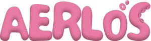

Trade Mark Journal No.2025/050 12 December 2025
UK00004304240 2 December 2025 (9,10,18,25,27,28)
Mark 1
Mark 2

- Class 9
- Sunglasses; Fashion sunglasses; Sunglasses frames; Sunglass lenses; Skateboard helmets; Snowboard helmets; Eye protection; Eye protection wear for sports; Safety glasses for protecting the eyes; Eye glasses; Eye protectors; Children's eye glasses; Eye glass cases; Eye glass cords; Eye glass chains; Frames for eye glasses; Protective goggles; Masks [Protective -]; Protecting masks; Head protection; Helmets (Protective -); Shoes (Protective -); Protective eyeglasses; Protective glasses; Protective eyewear; Protective masks; Protection masks; Protective helmets; Protective headgear; Protective visors; Visors [protective]; Protective face-shields for protective helmets; Cases for children's eye glasses; Protective sports helmets; Eyewear; Eyewear cases; Sports eyewear; Prescription eyewear; Eyewear pouches; Cases for eyewear; Corrective glasses; Nose pads for eyewear; Sunglass cords; Prescription sunglasses; Sunglass cases; Sunglass temples; Cases for sunglasses; Cords for sunglasses; Covers for sunglasses; Straps for sunglasses; Frames for sunglasses; Lenses for sunglasses; Chains for sunglasses; Sunglass nose pads; Clip-on sunglasses; Boxes [cases] for sunglasses; Glasses, sunglasses and contact lenses; Cases for spectacles and sunglasses; Frames for spectacles and sunglasses; Chains for spectacles and sunglasses; Cases for eyeglasses and sunglasses; Magnetic clip-on sunglass lenses; Chains for spectacles and for sunglasses; Optical lenses for use with sunglasses; Chains for spectacles; Chains for eyeglasses; Glasses; Sunglasses; Sports glasses; Smart glasses; Glasses frames; Optical glasses; Spectacles [glasses]; Optical glass; Cyclists' glasses; Ski glasses; Spectacle glasses; Prescription glasses; Field-glasses; Glasses cases; Sports' glasses; Shooting glasses [optical]; Optical glass filters; Frames for glasses; Telescopic bow sights for archery; Laptop bags; Phone cases; Mobile phone cases; Cell phone cases; Cases for mobile phones; Carrying cases for cellular phones; Carrying cases for mobile phones; Leather cases for mobile phones; Cases adapted for mobile phones; Waterproof cases for smart phones; Protective cases for cell phones; Carrying cases for cell phones; Protective cases for mobile phones; Leather cases for cellular phones; Straps for mobile phones; Camera casings; Eyeglass cases; Camera cases; Laptop cases; Flip covers for mobile phones; Life jackets; Cell phone straps; Holders for cell phones; Straps for cellular phones; Protective covers for cell phones; Flip covers for cellular phones; Flip covers for smart phones; Smart watches; Waterproof cases for smartphones; Life vests; Reflective safety vests; Bullet-proof vests; Water ski safety vests; Lifesaving vests for use by dogs; Inflatable vests for use in life saving; Laptop sleeves; Sleeves for laptops; Safety life jackets; Life jackets for pets; Jackets [bullet proof]; Life-saving vests for dogs; Spectacle straps; Camera straps; Mobile phone straps; Sunglasses for pets; Football helmets; Helmets for American football; Chin straps for football helmets; Telescopic bow sights; Protective clothing [body armour].
- Class 10
- Boots for medical purposes; Gloves for medical purposes; Exercise boots for medical rehabilitative purposes; Shoe covers for medical purposes; Splints [for medical purposes]; Walking aids [for medical purposes]; Walking aids for medical purposes; Orthopaedic splints; Soles (Orthopaedic [orthopedic] -); Orthopaedic [orthopedic] soles; Shoes (Orthopaedic [orthopedic] -); Footwear (Orthopaedic [orthopedic] -); Belts (Orthopaedic [orthopedic] -); Orthopaedic [orthopedic] belts; Orthopaedic insoles; Insoles [orthopaedic]; Orthopaedic braces; Orthopedic insoles; Orthopaedic strappings; Orthopaedic knee bandages; Orthopaedic soles; Arch cushions [orthopaedic]; Toe props [orthopaedic]; Orthopaedic foot cushions; Orthopaedic footwear; Splinting for orthopaedic use; Shoes (Orthopaedic -); Orthopedic soles; Orthopaedic detachable insoles; Orthopaedic shoe insoles; Surgical splints; Splints, surgical; Orthopedic footwear; Soft insoles [orthopaedic]; Insoles for footwear [orthopaedic]; Insoles for orthopaedic shoes; Insoles for shoes [orthopaedic]; Insoles for orthopedic footwear; Arch supports [orthopaedic]; Orthopaedic supports; Orthopaedic belts; Orthopaedic inserts for footwear; Inserts for footwear [orthopaedic]; Toe separators [orthopaedic]; Inserts for shoes [orthopaedic]; Insole-shells [orthopaedic]; Soles for footwear [orthopaedic]; Arch supports for orthopaedic shoes; Medical ankle braces; Toe inserts for footwear [orthopaedic]; Pads for shoes [orthopaedic]; Soles for shoes [orthopaedic]; Shoe insoles for orthopedic use; Soles made of leather [orthopaedic]; Orthopaedic footwear [shoes]; Orthotic insoles; Orthopedic footwear [shoes]; Prostheses for medical treatment; Splinting (Supportive -) for medical use; Splints for surgical use; Orthopaedic supports for heels; Shoe pads for orthopedic use; Toe separators for orthopaedic purposes; Electro-stimulation apparatus for use in therapeutic treatment; Therapeutic magnets; Apparatus for the therapeutic stimulation of the muscles; Exercise machines for therapeutic purposes; Therapeutic apparatus for children with autism; Magnets for therapeutic use; Therapeutic garments for people; Therapeutic weighted blankets; Therapeutic devices adapted for the disabled; Therapeutic devices adapted for persons with disabilities; Apparatus for physiotherapeutic treatment; Computer controlled training apparatus for therapeutic use; Therapeutic and assistive devices adapted for the disabled; Medical therapy instruments; Lamps for medical [curative] purposes; Speech therapy apparatus; Physical therapy equipment; Speech aid [therapy] apparatus; Medical robots for use in cognitive therapy for children; Physiotherapy and rehabilitation equipment; Physiotherapy apparatus; Step-up machines for use in physiotherapy; Treadmills for medical use in physiotherapeutic exercise; Electronic stimulation apparatus for physiotherapy; Apparatus for use in toning muscles for medical rehabilitation; Apparatus for medical rehabilitation; Orthopaedic prostheses; Exercise equipment for medical rehabilitative purposes; Exercise machines for medical rehabilitative purposes; Toe regulators [orthopaedic]; Foot orthoses; Toe separators for orthopedic purposes; Orthotic footwear; Orthopedic prostheses; Orthotic inserts for footwear; Orthoses; Exercise boots [orthopaedic footwear]; Arch supports for orthopaedic boots; Insoles for corrective treatment of conditions of the feet; Silicone orthopedic devices; Arch supports for footwear; Footwear (Arch supports for -); Toe relief pads [orthopaedic]; Orthopedic cushions; Prostheses; Heel pads for orthopaedic use; Orthopaedic inner soles incorporating arch supports; Pads for slippers [orthopaedic]; Medical prostheses; Heel supports for orthopaedic use; Arch supports for boots and shoes; Foot bandages [supportive]; Clothing, headgear and footwear, braces and supports, for medical purposes; Callipers [splints]; Insoles for corrective treatment of conditions of the lower limbs; Orthopaedic apparatus; Foot massagers; Foot massage apparatus; Arch supports for flat feet; Orthopaedic supports for feet; Electric foot warmers for medical use; Supports for flat feet; Flat feet (Supports for -); Appliances for massaging feet; Prosthetic socks for limbs; Surgical shoe covers; Elasticated supports for the ankle; Elasticated supports for the wrist; Ankle supports for medical use; Orthopaedic bandages for joints ; Socks (Elasticated -) for medical purposes; Physical exercise articles for physical training [for medical purposes]; Apparatus for physical training for medical use; Clothing, headgear and footwear for medical personnel and patients.
- Class 18
- Backpacks; Backpacks [rucksacks]; Small backpacks; School backpacks; Backpacks with rolling wheels; Boot bags; Bags; Shopping bags; Weekend bags; Messenger bags; Canvas bags; Boston bags; Kit bags; Casual bags; Towelling bags; Hand bags; Sports bags; Waist bags; Music bags; Belt bags and hip bags; Makeup bags; Work bags; Game bags; Toilet bags; Courier bags; Flight bags; Changing bags; Camping bags; Athletics bags; Roll bags; Barrel bags; Crossbody bags; Grips [bags]; Drawstring bags; Cabin bags; Cosmetic bags; Duffel bags; Duffle bags; Hunting bags; Toiletry bags; Knitted bags; Evening bags; Shoulder bags; Cloth bags; Souvenir bags; Waterproof bags; Hiking bags; Book bags; School bags; Travelling bags; Travel bags; Bum bags; Carrying bags; Wheeled bags; Knitting bags; Roller bags; Beach bags; Sling bags; Shoe bags; Garment bags; Suit bags; Gladstone bags; Overnight bags; Gym bags; Sport bags; Athletic bags; Traveling bags; Tote bags; Luggage bags; Attaché bags; Hip bags; Belt bags; Key bags; Clutch bags; Leather bags; Bucket bags; Carry-on bags; Make-up bags; Hunters' game bags; Imitation leather bags; Travelling bags [leatherware]; Wheeled shopping bags; Bags for school; Baby backpacks; Schoolchildren's backpacks; Luggage; Luggage labels; Travel luggage; Luggage tags; Luggage trunks; Luggage straps; Wheeled luggage; Trunks [luggage]; Luggage covers; Luggage label holders; Luggage tags [leatherware]; Trunks being luggage; Articles of luggage; Plastic luggage tags; Rubber luggage tags; Labels for luggage; Leather luggage tags; Leather luggage straps; Tags for luggage; Straps for luggage; Lockable luggage straps; Metal luggage tags; Fitted belts for luggage; Compression cubes adapted for luggage; Fitted protective covers for luggage; Luggage, bags, wallets and other carriers; Inserts for luggage in the form of compression cubes; Suitcases; Leather suitcases; Motorized suitcases; Wheeled suitcases; Suitcase handles; Overnight suitcases; Small suitcases; Handles (Suitcase -); Roller suitcases; Suitcases, motorized, rideable; Suitcases with wheels; Straps for suitcases; Trunks and suitcases; Carry-on suitcases; Suitcases with built-in shelves; Wallets; Wallets (Pocket -); Card wallets; Pocket wallets; Key wallets; Leather wallets; Ankle-mounted wallets; Wrist-mounted wallets; Credit card wallets; Card wallets [leatherware]; Wallets including card holders; Leather bags and wallets; Leather credit card wallets; Wallets incorporating card holders; Handbags, purses and wallets; Credit card cases [wallets]; Wallets with card compartments; Wallets of precious metal; Wallets [not of precious metal]; Wallets for attachment to belts; Wallets, not of precious metal; Business card holders in the nature of wallets; Holders in the nature of wallets for keys; Credit-card holders; Credit card holders; Leather credit card holder; Card holders made of leather; Credit card holders made of leather; Business card holders in the nature of card cases; Card holders made of imitation leather; Credit card holders made of imitation leather; Coin holders; Canvas shopping bags; Straps for skates; Leather shoulder straps; All-purpose leather straps; Straps made of imitation leather; Baggage tags; Carriers for suits, shirts and dresses; Mesh shopping bags; Pouches; Waist pouches; Key pouches; Leather pouches; Belt pouches; Drawstring pouches; Felt pouches; Pouches of leather; Tool pouches, sold empty; Tool pouches sold empty; Pouches, of leather, for packaging; Japanese utility pouches (shingen-bukuro); Bags [envelopes, pouches] for packaging of leather; Bags [envelopes, pouches] of leather for packaging; Bags [envelopes, pouches] of leather, for packaging; Pouches for holding make-up, keys and other personal items; Bags for travel; Bags (Garment -) for travel; Trunks and traveling bags; Trunks and travelling bags; Garment bags for travel; Shoe bags for travel; Duffel bags for travel; Travelling bags made of leather; Travelling bags made of imitation leather; Travel bags made of plastic materials; Garment bags for travel made of leather; Travelling sets; Travel baggage; Traveling sets; Travel cases; Travelling cases; Traveling trunks; Travelling trunks.
- Class 25
- Caps; Flat caps; Baseball caps and hats; Sports caps and hats; Beanies; Beanie hats; T-shirts; Printed t-shirts; Short-sleeved T-shirts; Shirts; Casual shirts; Sport shirts; Tennis shirts; Sleep shirts; Sports shirts; Football shirts; Knit shirts; Turtleneck shirts; Hunting shirts; Sweat shirts; Soccer shirts; Corduroy shirts; Button down shirts; Mock turtleneck shirts; Shirts for suits; Short-sleeve shirts; Short-sleeved shirts; Open-necked shirts; Hooded sweat shirts; Long-sleeved shirts; American football shirts; Moisture-wicking sports shirts; Sports shirts with short sleeves; Sweatbands; Head sweatbands; Bandanas; Bandanas [neckerchiefs]; Hoodies; Woolly hats; Bobble hats; Bucket hats; Snowboard boots; Snowboard shoes; Snowboard jackets; Snowboard trousers; Snowboard mittens; Snowboard gloves; Footwear for snowboarding; Clothing; Clothes; Wristbands [clothing]; Tops [clothing]; Knitted clothing; Oilskins [clothing]; Motorcyclists' clothing; Hoods [clothing]; Leisure clothing; Infant clothing; Children's clothing; Childrens' clothing; Sports clothing; Leather clothing; Gloves [clothing]; Waterproof clothing; Plush clothing; Girls' clothing; Layettes [clothing]; Jackets [clothing]; Kerchiefs [clothing]; Chaps (clothing); Thermal clothing; Belts [clothing]; Muffs [clothing]; Capes (clothing); Motorists' clothing; Slips [clothing]; Athletic clothing; Triathlon clothing; Windproof clothing; Silk clothing; Work clothes; Woolen clothing; Ladies' clothing; Beach clothes; Beach clothing; Gabardines [clothing]; Men's clothing; Boys' clothing; Fishing clothing; Paper clothing; Bottoms [clothing]; Mufflers [clothing]; Handwarmers [clothing]; Cowls [clothing]; Visors [clothing]; Headbands [clothing]; Headwear; Peaked headwear; Children's headwear; Caps [headwear]; Visors [headwear]; Bonnets [headwear]; Leather headwear; Fishing headwear; Caps being headwear; Visors being headwear; Sun visors [headwear]; Footwear; Footwear [excluding orthopedic footwear]; Golf footwear; Athletics footwear; Athletic footwear; Footwear uppers; Casual footwear; Footwear soles; Fishing footwear; Pumps [footwear]; Infants' footwear; Children's footwear; Sneakers [footwear]; Rubbers [footwear]; Ladies' footwear; Beach footwear; Climbing footwear; Sports footwear; Trainers [footwear]; Uppers (Footwear -); Leisure footwear; Tips for footwear; Footwear for women; Soles for footwear; Footwear (Tips for -); Footwear for sport; Footwear for sports; Heelpieces for footwear; Insoles for footwear; Footwear for men; Traction attachments for footwear; Inner socks for footwear; Footwear made of vinyl; Footwear not for sports; Footwear for use in sport; Non-slipping devices for footwear; Footwear (Non-slipping devices for -); Footwear (Fittings of metal for -); Fittings of metal for footwear; Footwear for men and women; Japanese split-toed work footwear (jikatabi); Footwear for track and field athletics; Parts of clothing, footwear and headgear; Flip-flops for use as footwear; Roller shoes; Swimming caps [bathing caps]; Bathing caps; Skull caps; Shower caps; Caps (Shower -); Knitted caps; Cap visors; Peaks (Cap -); Peaked caps; Swim caps; Golf caps; Swimming caps; Knot caps; Cycling caps; Sports caps; Baseball caps; Cap peaks; Bucket caps; Garrison caps; Caps with visors; Hats; Top hats; Small hats; Sun hats; Baseball hats; Rain hats; Ski hats; Fashion hats; Cloche hats; Beach hats; Toques [hats]; Frames (Hat -)[skeletons]; Party hats [clothing]; Ushankas [fur hats]; Hats (Paper -) [clothing]; Hat frames [skeletons]; Paper hats [clothing]; Sedge hats (suge-gasa); Clothing for horse-riding [other than riding hats]; Football boots; Football jerseys; Football shoes; Replica football kits; American football shorts; American football bibs; American football pants; American football socks; Football boots (Studs for -); Studs for football boots; Studs for football shoes; Hunting boot bags; Sneakers; Wedge sneakers; Basketball sneakers; Shoes; Riding shoes; Work shoes; Jogging shoes; Canvas shoes; Women's shoes; Sports shoes; Athletic shoes; Training shoes; Flat shoes; Platform shoes; Dress shoes; Basketball shoes; Cycling shoes; Running shoes; Walking shoes; Hiking shoes; Hockey shoes; Soccer shoes; Baseball shoes; Rubber shoes; Aqua shoes; Leisure shoes; Shoe straps; Baby shoes; Dance shoes; Deck shoes; Mountaineering shoes; Infants' shoes; Shoe uppers; Shoe soles; Deck-shoes; Rain shoes; Leather shoes; Beach shoes; Tennis shoes; Athletics shoes; Sport shoes; Skiing shoes; Waterproof shoes; Slip-on shoes; Stiffeners for shoes; Spiked running shoes; Shoes for infants; Hidden heel shoes; Socks; Men's socks; Bed socks; Trouser socks; Ankle socks; Anklets [socks]; Sports socks; Tennis socks; Thermal socks; Slipper socks; Woollen socks; Japanese style socks (tabi); Non-slip socks; Anti-perspirant socks; Socks for men; Men's dress socks; Sweat-absorbent socks; Japanese style socks (tabi covers); Socks for infants and toddlers; Gloves; Wetsuit gloves; Fingerless gloves; Camouflage gloves; Cycling Gloves; Knitted gloves; Riding gloves; Riding Gloves; Winter gloves; Ski gloves; Gloves for apparel; Gloves as clothing; Gloves for cyclists; Fingerless gloves as clothing; Sports clothing [other than golf gloves]; Gloves with conductive fingertips that may be worn while using handheld electronic touch screen devices; Jackets; Fur jackets; Bed jackets; Sleeveless jackets; Stuff jackets; Camouflage jackets; Dinner jackets; Down jackets; Rainproof jackets; Rain jackets; Fleece jackets; Shell jackets; Leather jackets; Sweat jackets; Knit jackets; Suede jackets; Waterproof jackets; Weatherproof jackets; Wind jackets; Jacket liners; Reversible jackets; Hunting jackets; Bomber jackets; Casual jackets; Track jackets; Ski jackets; Blouson jackets; Sports jackets; Padded jackets; Denim jackets; Sleeved jackets; Long jackets; Motorcycle jackets; Wind-jackets; Windproof jackets; Sheepskin jackets; Safari jackets; Light-reflecting jackets; Jackets (Stuff -) [clothing]; Polar fleece jackets; Quilted jackets [clothing]; Wind-resistant jackets; Wind resistant jackets; Warm-up jackets; Stuff jackets [clothing]; Climbing boots [mountaineering boots]; Boots; Motorcyclist boots; Wellington boots; Desert boots; Infants' boots; Riding boots; Ladies' boots; Hiking boots; Walking boots; Ski boots; Half-boots; Military boots; Ankle boots; Mountaineering boots; Climbing boots; Army boots; Trekking boots; Fishing boots; Waterproof boots; Baby boots; Hunting boots; Rain boots; Rugby boots; Lace boots; Gym boots; Soccer boots; Work boots; Winter boots; Snow boots; Boots (Ski -); Boot uppers; Stiffeners for boots; Sports [Boots for -]; Boots for sport; Horse-riding boots; Boots for sports; Après-ski boots; Boots for motorcycling; After ski boots; Rubber fishing boots; Ski boot bags; Waterproof boots for fishing; Insoles for shoes and boots; Insoles [for shoes and boots]; Tongues for shoes and boots; Pullstraps for shoes and boots; Non-slipping devices for boots; Protective metal members for shoes and boots; Fittings of metal for boots and shoes; Denim pants; Denim jeans; Denim coats; Coats of denim; Coats; Coats (Top -); Trench coats; Evening coats; Dust coats; Duffle coats; Wind coats; Suit coats; Sport coats; Tail coats; Rain coats; House coats; Leather coats; Duffel coats; Top coats; Winter coats; Heavy coats; Coats for men; Light-reflecting coats; Coats for women; Boxer shorts; Boxer briefs; Waist belts; Fabric belts; Tuxedo belts; Suspender belts; Belts of textile; Belts (Money -) [clothing]; Fabric belts [clothing]; Leather belts [clothing]; Money belts [clothing]; Belts for clothing; Belts made of leather; Suspender belts for men; Wrap belts for kimonos (datemaki); Belts made out of cloth; Belts made from imitation leather; Golf shoes; Boxing shoes; Rugby shoes; Boy shorts [underwear]; Outerclothing for boys; Outerclothing for girls; Golf clothing, other than gloves; Wetsuits for surface watersports; Wetsuits for water-skiing; Wetsuits; Wetsuits for surfing; Waterproof suits for motorcyclists; Waterproof outerclothing; Waterproof capes; Waterproof trousers; Waterproof pants; Jerseys; Sleeveless jerseys; Sports jerseys; Jerseys [clothing]; Sports jerseys and breeches for sports; Shorts; Shorts [clothing]; Swim shorts; Fleece shorts; Gym shorts; Short trousers; Tennis shorts; Sweat shorts; Board shorts; Padded shorts for athletic use; Dungarees; Pants; Dress pants; Lounge pants; Chino pants; Ski pants; Jogging pants; Wind pants; Weatherproof pants; Corduroy pants; Leather pants; Sweat pants; Sports pants; Hunting pants; Track pants; Camouflage pants; Snow pants; Warm-up pants; Horse-riding pants; Moisture-wicking sports pants; Padded pants for athletic use; Camouflage shirts; Under shirts; Pique shirts; Yokes (Shirt -); Shirt yokes; Tee-shirts; Dress shirts; Woven shirts; Collared shirts; Night shirts; Aloha shirts; Shirt-jacs; Shirts and slips; Button-front aloha shirts; Padded shirts for athletic use; Snap crotch shirts for infants and toddlers; Vests; Athletics vests; Wind vests; Quilted vests; Running vests; Hunting vests; Down vests; Vest tops; Sports vests; Waistcoats [vests]; Camouflage vests; Fleece vests; Long sleeved vests; Wind-resistant vests; Men's and women's jackets, coats, trousers, vests; Long sleeve pullovers; Long johns; Long underwear; Wind suits; Dress suits; Men's suits; Evening suits; Ski suits; Flying suits; Snow suits; Boiler suits; Snow boarding suits; Ski suits for competition; Gussets for bathing suits [parts of clothing]; Skirt suits; Body suits; Running Suits; Leisure suits; Jogging suits; Track suits; Three piece suits [clothing]; Suits; Gym suits; Sweat suits; Ski and snowboard shoes and parts thereof; Surf wear; Swimming costumes; Swimming trunks; Swim briefs; Swimming suits; Swim suits; Swim trunks; Swim wear for children; Fitted swimming costumes with bra cups; Swim wear for gentlemen and ladies; Leather dresses; Leather slippers; Leather waistcoats; Leather garments; Leather suits; Suits of leather; Leather (Clothing of -); Imitation leather dresses; Trousers of leather; Clothing of leather; Denims [clothing]; Weatherproof clothing; Casual clothing; Outer clothing; Embroidered clothing; Tennis skirts; Tennis dresses; Tennis pullovers; Tennis sweatbands; Tennis wear; Flip-flops; Tank-tops; Tank tops; Tops; Hooded tops; Fleece tops; Crop tops; Baselayer tops; Knit tops; Knitted tops; Tracksuit tops; Jogging tops; Turtleneck tops; Baby tops; Polo knit tops; Warm-up tops; Infants' trousers; Trousers; Corduroy trousers; Riding trousers; Trousers for children; Rash guards; Sweatpants; Balaclavas; Ski balaclavas; Sun visors; Anoraks; Anoraks [parkas]; Bow ties; Sandals; Ladies' sandals; Bath sandals; Men's sandals; Baby sandals; Japanese style sandals of leather; Japanese style sandals of felt; Japanese style clogs and sandals; Uppers for Japanese style sandals; Soles for japanese style sandals; Slippers; Bath slippers; Disposable slippers; Plastic slippers; Slippers made of leather; Dressing gowns; Gowns; Night gowns; Evening gowns; Sleep masks; Masks (Sleep -); Eye masks; Face mask [clothing]; Face masks [fashion wear]; Aprons; Plastic aprons; Aprons [clothing]; Scarfs; Neck scarfs [mufflers]; Cargo pants; Baby pants; Stretch pants; Sleep pants; Babies' pants [clothing]; Track and field shoes; Knitwear; Knitwear [clothing]; Crew neck sweaters; Neck tubes; Neck warmers; Polo neck jumpers; Neck gaiters; Neck scarves; V-neck sweaters; Neck tube scarves; Roll necks [clothing]; Neck scarves [mufflers]; Turtleneck pullovers; Jumpers [pullovers]; Fleece pullovers; Pullovers; Hooded pullovers; Sleeveless pullovers; Dresses; Blouses; Pleated skirts; Skirts; Wristbands; Gussets [parts of clothing]; Underarm gussets [parts of clothing]; Gussets for underwear [parts of clothing]; Linings (Ready-made -) [parts of clothing]; Ready-made linings [parts of clothing]; Gussets for footlets [parts of clothing]; Articles of clothing; Jeans; Blue jeans.
- Class 27
- Rugs; Rugs [mats]; Rugs (Door -); Fur rugs; Area rugs; Rugs (Floor -); Bathroom rugs; Underlays for rugs; Carpets, rugs and mats; Oriental non-woven rugs (mosen); Anti-slip material for use under rugs; Mats; Matting; Rubber mats; Bathroom mats; Reed mats; Bath mats; Runners [mats]; Floor mats; Car mats; Cork mats; Straw mats; Beach mats; Door mats; Fabric bath mats; Plastic bath mats; Non-slip mats; Textile bath mats; Rubber bath mats; Underlay for mats; Wooden door mats; Floor mats of cork; Floor mats for automobiles; Non-slip mats for baths; Door mats of india rubber; Non-slip mats for showers.
- Class 28
- Skateboards; Skateboard wheels; Skateboard trucks; Bags for skateboards; Skateboards [recreational equipment]; Athletic protective wrist pads for skateboarding; Athletic protective arm pads for skateboarding; Athletic protective elbow pads for skateboarding; Athletic protective knee pads for skateboarding; Elbow guards for use in skateboarding; Surfboards; Surfboard fins; Surfboard leashes; Surfboard covers; Bags adapted to carry surfboards; Bags especially designed for surfboards; Snowboard decks; Snowboards; Snowboard bindings; Bindings for snowboards; Skateboard rollers; Skateboard paddles; Protectors for elbows for use when skateboarding [sports articles]; Roller skates; Roller-skates; Skates (Roller -); In-line roller skates; Skates (In-line roller -); Footballs; Rugby footballs; Football gloves; American footballs; Football equipment; Reduced sized footballs; Table football tables; Indoor football tables; Indoor football (Tables for -); Football or soccer goals; Gloves for American football; Football field model toys; Football (Tables for indoor -); Tables for indoor football; Tables for table football; Girdles for American football; Shoulder pads for American football; Elbow pads for American football; Leg pads for American football; Knee pads for American football; Chest pads for American football; Body protectors for American football; Apparatus for archery; Archery implements; Archery targets; Archery apparatus; Archery bowstrings; Archery bows; Archery quivers; Archery sets; Sports bows [archery]; Archery finger tabs; Archery bow cases; Archery arrow points; Bows for archery; Arrows [for archery]; Archery bow stringers; Archery arm guards; Gauntlets [gloves for archery]; Finger tabs for archery; Open bow sights for archery; Fletching jigs for archery arrows; Bows for Japanese archery (yumi); Articles for use in archery; Non-telescopic bow sights for archery; Archery implements [of Japanese and western styles]; Ski bags; Protectors for the knees for use when skateboarding [sports articles]; Fencing gloves; Baseball gloves; Gloves (Baseball -); Gloves for sports; Water-skiing gloves; Gloves for water-skiing; Gloves made specifically for use in playing sports; In-line skates; Snow shoes; Trading cards [card game]; Game cards; Playing cards; Playing cards and card games; Card games; Cards (Playing - ); Cards [games]; Gloves (Boxing -); Golf gloves; Billiard gloves; Surf fins; Surf boards; Wake boards; Snow boards; Tennis balls; Tennis uprights; Tennis nets; Tennis rackets; Tennis racquets; Rackets [for tennis]; Table tennis tables; Table tennis nets; Tennis racquet strings; Table-tennis balls; Table tennis balls; Soft tennis balls; Tennis racket covers; Table tennis bats; Platform tennis balls; Lawn tennis rackets; Lawn tennis racquets; Tennis nets and uprights; Tables for table tennis; Table tennis paddle cases; Strings for tennis rackets; Platform tennis nets; Table tennis paddles; Platform tennis paddles; Tennis racket strings; Tennis uprights [sports equipment]; Tennis net centre straps; Table tennis (Tables for -); Tennis balls [not soft]; Cases for tennis balls; Strings for tennis racquets; Gut for tennis rackets; Table tennis net posts; Table tennis racket covers (Shaped -); Balls for playing platform tennis; Shaped covers for tennis rackets; Vibration dampeners for tennis rackets; Shaped covers for table tennis bats; Coverings for table tennis bats; Paddles for playing platform tennis; Safety paddings for tennis uprights; Natural gut strings for tennis racquets; Tennis bags shaped to contain a racket; Tapes for wrapping tennis racquet handle grips; Grip bands for table tennis bats; Racket cases [for tennis or badminton]; Natural gut strings for tennis rackets; Tapes with weights for balancing tennis racquets; Guts for rackets [for tennis or badminton]; Table tennis trainers with elastic soft shafts; Fitted protective covers specially adapted for tennis rackets; Plush toys; Smart plush toys; Stuffed plush toys; Plush stuffed toys; Stuffed and plush toys; Soft sculpture plush toys; Toys; Children's toys; Infant toys; Fabric toys; Toy tents; Pet toys; Squeeze toys; Toy swords; Puzzles [toys]; Fluffy toys; Smart toys; Action toys; Toy castles; Toy holsters; Toy weapons; Cuddly toys; Modular toys; Assembly toys; Inflatable toys; Electronic toys; Toy arrows; Toy armor; Table-top games; Racket grip tapes; Racket grip tape; Grip tape for racquets; Grip tapes for golf clubs; Grip tapes for baseball bats; Grips for golf clubs; Grips for sporting articles; Grip bands for tennis rackets; Grip bands for badminton rackets; Grip bands for squash rackets; Bodyboard leashes; Skis and surfboards (Bags especially designed for -); Bags especially designed for skis and surfboards; Shin guards; Shin guards for soccer; Hunting bows; Toy bows and arrows; Soccer balls.
NEW-FOUND-HOPE LTD